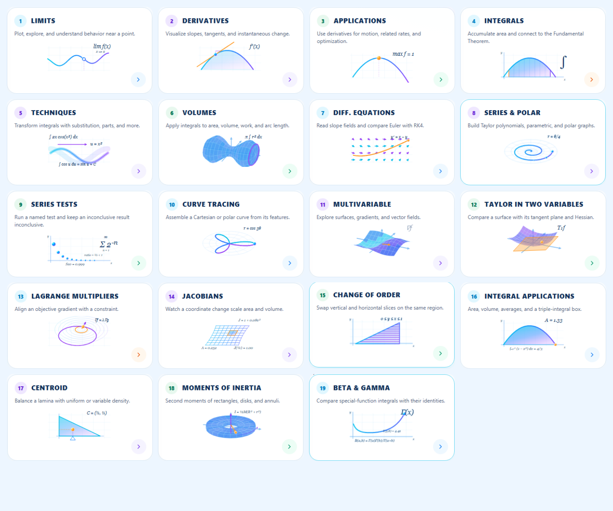

19 home-card illustrations replaced: 15 animated 2D diagrams and 4 animated 3D objects. The registry also covers the existing Advanced route with a unique saddle surface; no card was added or reordered.
The existing page differs from the recorded baseline only by one illustration import and the illustration child binding. The hero, header, sidebar, all 19 card positions and dimensions, right panels, Ruhi, routes, descriptions, numbering, themes and lab engines were retained. The Continue experiment panel still uses its original illustration.
The browser audit compared exact recorded geometry at 1672 × 941 and visited every original card destination without exceptions. All 19 illustrations fit within their cards at 320, 390, 768, 1280 and 1672 pixels.
Existing Three.js provides real vertex transforms for mathematical meshes; SVG provides the immediate, resolution-independent static illustration. A lazily initialized Canvas2D layer animates the same mathematical marks at high DPI. A shared requestAnimationFrame scheduler advances visible illustrations, with 3D rendering capped at 30 Hz. IntersectionObserver pauses offscreen cards; document visibility pauses the shared loop. Hover smoothly increases activity and lighting; touch needs no hover. Both system and Calculus reduced-motion settings select the meaningful static SVG.
No dependencies were added. No WebGL contexts or React renders per animation frame. Compound mesh paths, cached geometry/projections and fixed-size canvas buffers limit work. Unmount removes observers/listeners, unsubscribes frames and releases canvas buffers; geometry caches are bounded by the finite registry.
Compared the provided mockup with the captured application thumbnails. Cyan/blue/purple gradients, orange mathematical points, open limit point, exact tangent, shaded integrals, ribbons, revolution solid, polar grid, surface mesh, tangent plane and contour rings follow the reference's mathematical vocabulary.
One mockup image was available in this request, although the pasted brief mentions three. This is not a pixel-perfect reconstruction: lightweight mesh shading has less glass-like lighting, and illustrations fit the original 78-pixel drawing slot. Correct ODE, convergence, Jacobian and Gamma examples take precedence over decorative shapes. No part of the page was redesigned to resemble the mockup.

| # | Existing lab | Dimension | Mathematical visual / animation | Navigation |
|---|---|---|---|---|
| 1 | Limits | 2D | Two-sided limit: both points approach the open limit point | Passed |
| 2 | Derivatives | 2D | Derivative of 1−x²: moving contact point and exact tangent | Passed |
| 3 | Applications | 2D | Optimization: maximum of 1−x² at x=0 | Passed |
| 4 | Integrals | 2D | Definite integral: progressively shaded area with boundaries | Passed |
| 5 | Techniques | 2D | Substitution u=x² transforms the integral of 2x cos(x²) | Passed |
| 6 | Volumes | 3D | Three-dimensional solid of revolution with sweeping circular section | Passed |
| 7 | Diff. Equations | 2D | Slope field y′=x−y and its exact solution y=x−1+1.4 exp(−x) | Passed |
| 8 | Series & Polar | 2D | Archimedean polar spiral with outward tracing points | Passed |
| 9 | Series Tests | 2D | Geometric series: sum of 2 to the power −n, convergent by the ratio test | Passed |
| 10 | Curve Tracing | 2D | Three-petal rose r=cos(3θ) with distinct traced segments | Passed |
| 11 | Multivariable | 3D | Three-dimensional sinusoidal function mesh and its gradient | Passed |
| 12 | Taylor in Two Variables | 3D | Three-dimensional paraboloid and exact first-order tangent plane | Passed |
| 13 | Lagrange Multipliers | 2D | Circular objective contours and constrained optimum with parallel gradients | Passed |
| 14 | Jacobians | 2D | Nonlinear coordinate map with determinant and exact mapped region area | Passed |
| 15 | Change of Order | 2D | Fixed triangular integration region with vertical and horizontal slices | Passed |
| 16 | Integral Applications | 2D | Accumulating geometric area between a parabola and the x axis | Passed |
| 17 | Centroid | 2D | Uniform triangular lamina balancing at its computed centroid | Passed |
| 18 | Moments of Inertia | 3D | Three-dimensional annulus, rotation axis, radial mass and angular direction | Passed |
| 19 | Beta & Gamma | 2D | Correct positive Gamma function curve and Beta–Gamma identity | Passed |
Additional behaviours: opposing limit points approach and pause; the tangent is computed from the parabola derivative; maxima and centroid settle at computed positions; area strips fill progressively; substitution arrows draw; volume sections sweep; the ODE solution traces through its field; spiral and rose points follow their curves; geometric partial sums update with the ratio-test justification; the Taylor plane stays mathematically correct while revealing; Lagrange gradients become parallel; the nonlinear grid warps forward/back with its exact region area; vertical slices transition to horizontal slices inside unchanged boundaries; radial mass and rotation indicators follow the annulus; Gamma tracing uses the actual positive-real function.
| Same browser / viewport | Average FPS | Median frame | 95th percentile | Long tasks |
|---|---|---|---|---|
| baseline | 60.0 | 16.7 ms | 16.7 ms | 0 |
| upgraded | 60.0 | 16.7 ms | 16.8 ms | 0 |
Four-second Chromium samples at 1672 × 941, with 11 illustrations active in the upgraded sample. These measurements describe this machine and browser, not every laptop. The benchmark restores only the old card illustration in the baseline browser response; it does not rewrite source files. Raw results.
src/studios/investigations/models.ts:48 (“} expected”). Typecheck log.src/pages/CalculusStudio.tsxsrc/studios/calculus/illustrations/CalculusLabIllustration.tsxsrc/studios/calculus/illustrations/animation.tssrc/studios/calculus/illustrations/canvas.tssrc/studios/calculus/illustrations/math.tssrc/studios/calculus/illustrations/scenes.tssrc/studios/calculus/illustrations/illustrations.csssrc/studios/calculus/illustrations/illustrations.test.tsscripts/audit-calculus-illustrations.mjsscripts/benchmark-calculus-illustrations.mjsscripts/report-calculus-illustrations.mjsPage baseline, screenshots, geometry, browser results, performance samples and logs are stored in artifacts/calculus-illustrations/. This report is CALCULUS_ILLUSTRATIONS_REPORT.html.